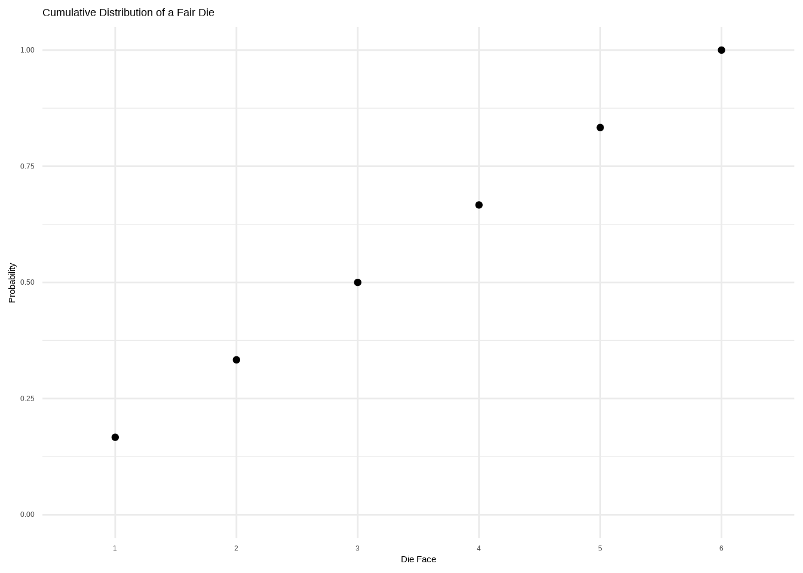
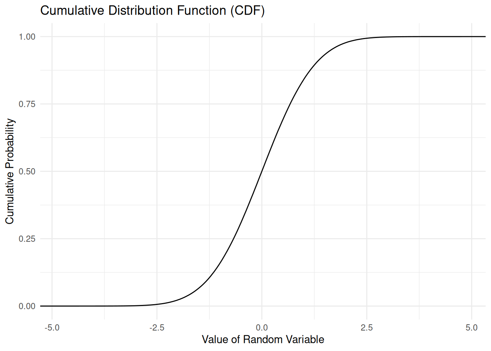
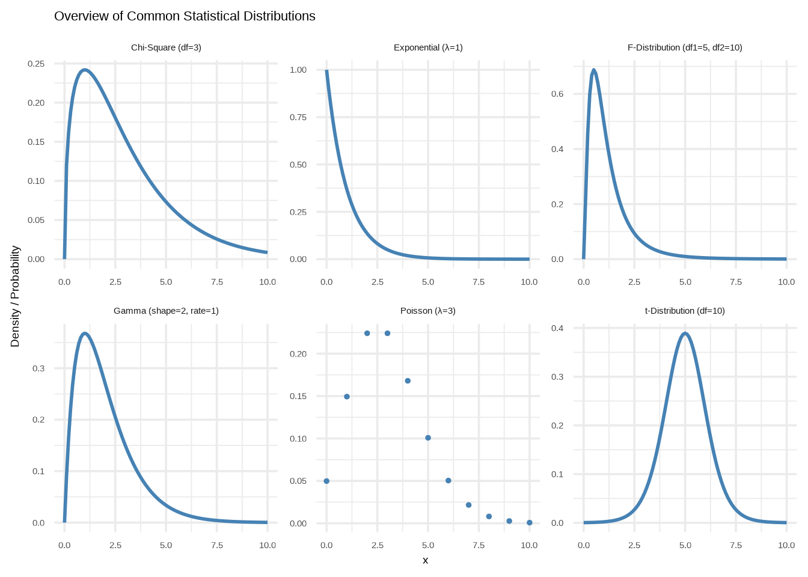

Chapter 7 Further Explanations
In this Chapter we start into the main strength of R: Data Analysis. After cleaning our data we are ready to analyze it, but it is always recommend to get an overview of our data with exploratory data analysis. This yields the advantage that we can detect first trends and potential problems with our data. Furthermore, we will get a better understand of the Data Generating Process and how data is generated.
Let us tart with loading packages and you will see, that we are loading a lot of packages due to the fact, that R is a statistical analysis software and therefore it is only natural that Statisticians and Data Scientists, who use R, are also writing packages to (1) make their own life easier, but also (2) further developing R.
7.1 Probability Theory
Before diving into Exploratory Data Analysis and Linear Regression, it’s worth taking a moment to look at Probability Theory. This is crucial because probability forms the foundation of statistics: it allows us to make statements that include uncertainty. Instead of saying something definite like “It will rain tomorrow,” probability allows us to say, “There is a 70% chance of rain tomorrow.” That means you might want to take an umbrella — but there’s still a 30% chance you won’t need it.
7.1.1 Random Variable
We are interested in Data! And Data is nothing more than a bunch of Random Variables. Technically speaking, a Random Variable is a numerical outcome of a random process or experiment. Informally, let us say you want to collect Data about your family, just image all of them and now randomly pick some information about them, their height, their age, gender, glasses or not, cooking abilities, anything, and now you just need to find a system of assigning a number (e.g. height in cm, age in years,…) and et violà you collected a random variable. Note that a random variable is the mutually exclusive outcome of a random process.
Rolling a dice and getting the result of the dice could be a random variable, let us role the dice and say we got a 3:
## [1] 3We now collected our first random variable. On its own, a random variable is not really insightful, but what if we do not collect one random variable, but two? Or three? Or thousand?
7.1.1.1 Discrete and Continuous Variables
Before answering the question above, there is an important distinction to make between the types of random variables we can collect. There are discrete and continuous variables:
A discrete variable can take on a finite or countably infinite set of distinct values, usually integers. These values are separated and cannot take on values in between. For example: Number of children, coin flips, number of goals.
A continuous variable can take on any value within a given range, including fractions and decimals. Between any two values, there are infinitely many possible values. For example: Height, weight, temperature, time.
7.1.1.2 Population vs Sample Distribution
Another thing to clarify before going on with Probability Distributions, is the difference between Populations and Samples.
Population: The population is the entire group we are theoretically interested in studying, based on our research question. For example, if we want to know the average height of German women, then the population consists of all German women. The population mean is the true average height of all German women.
Sample: Asking every German woman (42.3 million, according to the Federal Office of Statistics, 2023) would indeed be impractical. Instead, we use statistical sampling to gather data from a smaller, more manageable subset of the population. Probability theory helps ensure that this sample is representative of the entire population.
For the sample to be representative of the population, it needs to meet two key criteria:
Sample Size: The sample must be large enough to accurately reflect the population’s characteristics.
Randomness: Every individual in the population must have an equal chance of being selected for the sample. This ensures that the sample is random and not biased in any way.
When these conditions are met, we can confidently generalize the findings from the sample to the larger population. For example, we calculate the sample mean (the average of the sample). This is the true value for the sample itself, but we use it to make an inference about the population mean.
However, the sample mean will not always be exactly equal to the population mean. This is because of sampling variability — there’s always some random variation in the sample that can cause deviations from the population mean.
Despite this, if the sample is large enough and chosen randomly, the sample mean will tend to be close to the population mean on average, and the difference between them decreases as the sample size increases.
The difference of population and sample is crucial and will be important in the later section of this chapter!
7.1.2 Probability Distributions
7.1.2.1 Probability Mass Functions (PMF)
7.1.2.1.1 Uniform Distributions
We can let R roll the dice for us using the sample() function. This function takes in the range of possible outcomes, the number of observations to draw, and some additional options (which we won’t worry about for now):
This simulates rolling a fair six-sided die 1,000 times.
Let us plot it:
# Plot with ggplot
ggplot(dice_rolls, aes(x = factor(roll))) +
geom_bar(fill = "#89CFF0", color = "gray") +
labs(
title = "Distribution of 1,000 Dice Rolls",
x = "Dice Face",
y = "Frequency"
) +
theme_minimal()
What we’ve created here is called a distribution of a discrete variable. A discrete variable has a countable number of distinct outcomes. In this case, our die can only land on one of six values: 1 through 6 — nothing in between.
This explicit type of distribution is called uniform distribution. A uniform distribution is one in which all outcomes are equally likely — in our case, each face of the die (1 through 6) has the same probability of occurring. Thus, the probability of one outcome is just 1/n, thus 1/6 for each outcome. Let us plot that as well:
# Define the outcomes and their corresponding probabilities
uniform_dis <- data.frame(
Outcome = factor(1:6),
Probability = rep(1/6, 6)
)
# Plot it
ggplot(uniform_dis, aes(x = Outcome, y = Probability)) +
geom_point() +
labs(
title = "Uniform Probability Distribution of a Fair Die",
x = "Die Face",
y = "Probability"
) +
theme_minimal()
This a so-called Probability Mass Function (PMF). This is the term for probability distributions of discrete variables. It is useful since we can determine the probability of an event with it, for example the probability of getting 3:
\[ P(X = 3) = \frac{1}{6} \]
What if we start to cumulate the probabilities, like in the following table:
| Outcome | 1 | 2 | 3 | 4 | 5 | 6 |
|---|---|---|---|---|---|---|
| Probability | 1/6 | 1/6 | 1/6 | 1/6 | 1/6 | 1/6 |
| Cumulative Probability | 1/6 | 2/6 | 3/6 | 4/6 | 5/6 | 1 |
We can plot the cumulative Probability by calculating it with the cumsum() function:
# Calculating the cumsum
uniform_dis$cumsum <- cumsum(uniform_dis$Probability)
# Plot it
ggplot(uniform_dis, aes(x = Outcome, y = cumsum)) +
geom_point() +
labs(
title = "Cumulative Distribution of a Fair Die",
x = "Die Face",
y = "Probability"
) +
ylim(0,1) +
theme_minimal()
With this graph we can directly see the cumulative distribution for several outcomes, for example the cumulative probability for the outcome 3 is 0.5, thus 50%, so with a 50% probability I will get either 1, 2 or 3.
7.1.2.1.2 Bernoulli Distributions
In this part I want to introduce you a new type of distribution: The bernoulli distribution. It is super easy it takes on the value 1 with probability \(p\) and the value 0 with the probability \(q = 1 -p\). In more simple terms, it displays the outcomes for any experiment that has yes/no answers. The classical example is head and tails, you throw a coin and it either shows head or tails. Let us simulate data and plot it:
# Simulate 1000 tosses of a fair coin (1 = Head, 0 = Tail)
set.seed(101) # for reproducibility
fair_coin <- data.frame(
outcome = factor(rbinom(10, 1, 0.5), levels = c(0, 1),
labels = c("Tail", "Head"))
)
# Plot the results
ggplot(fair_coin, aes(x = outcome)) +
geom_bar(fill = "#89CFF0", width = 0.35) +
labs(
title = "Simulation of 10 Tosses of a Fair Coin",
x = "Outcome",
y = "Count"
) +
theme_minimal()
As we probably expected, if we throw a fair coin ten times we will get approximately 5 Tails and 5 Heads. Furthermore, we plotted our first Bernoulli Distribution.
This is an example for a fair coin, what if our coin was “not fair” or “unfair”, thus a “biased” coin, we could plot that as well:
# Simulate 1000 tosses of an unfair coin (1 = Head, 0 = Tail)
set.seed(102) # for reproducibility
unfair_coin <- data.frame(
outcome = factor(rbinom(10, 1, 0.28), levels = c(0, 1),
labels = c("Tail", "Head"))
)
# Plot the results
ggplot(unfair_coin, aes(x = outcome)) +
geom_bar(fill = "#89CFF0", width = 0.35) +
labs(
title = "Simulation of 1000 Tosses of an unfair Coin",
x = "Outcome",
y = "Count"
) +
theme_minimal()
We can see that the bins are not equal the coin has a tendency for Tail. The Probability for getting Tail is higher than getting Head with this Unfair Coin.
How does the Probability Distribution of a Bernoulli Distribution looks like? Before answering this question, we have to calculate the probability of getting exact 7 Tails and 3 Heads as we got. I leave the maths out, thankfully R can do that with the dbinom() function, it takes in “x” which is the number of outcomes we got, thus our Tail = 7. Then we have to put in the size, which is the number of trials, thus 10 and lastly the probability, if it is a fair coin 0.5. I computed the biased coin with a probability of 0.28.
Let us calculate for the fair and the biased coin, the probability of our results:
## [1] 0.2460938## [1] 0.2642304What you can see here is the probability of getting exact 5 heads for the fair coin and 3 heads for the unfair coin. So to get exact 5 heads with the fair coin has a probability of 24.6% and the probability of getting exact 3 heads has a probability of 26.4%.
7.1.2.1.3 Binomial Distribution
How does it come, that although we have compute a probability of 50% of a success in each trial, that we only get a probability of 5 heads with 24.6% probability and 26.4% of getting 3 heads with a biased coin?
We can solve this problem by plotting a so-called Binomial Distribution. It displays the number of successes in a fixed number of independent yes/no, thus head and tails (Bernoulli) trials.
It gets clear, when we plot all Probabilities for both coins for each possible outcome for head, thus 10, since we have 10 trials:
# Create theoretical distributions
theoretical_probs <- data.frame(
heads = rep(0:10, 2),
coin_type = rep(c("unbiased", "biased"), each = 11),
prob = c(dbinom(0:10, size = 10, prob = 0.5),
dbinom(0:10, size = 10, prob = 0.28))
)
# Plot
ggplot(theoretical_probs, aes(x = heads, y = prob)) +
geom_point(size = 1.5, color = "black") +
facet_wrap(~ coin_type,
labeller = as_labeller(c(
biased = "Biased Coin (p = 0.28)",
unbiased = "Unbiased Coin (p = 0.5)"))) +
labs(title = "Theoretical Binomial Distribution of Number of Heads in 10 Flips",
x = "Number of Heads",
y = "Probability") +
scale_x_continuous(breaks = 0:10) +
theme_bw()
Now, the reason behind the probabilities for the outcome for heads becomes clear, the computed probability deviates from the outcome probability because in some cases the trials follow the computed probability but in some cases it deviates and head becomes 2 or 4 for the biased coin and 4 or 6 for the unbiased coin.
At this point, one thing becomes clear: the computed probability represents the expected likelihood of obtaining a specific number of heads on average over a large number of repeated experiments. Why “on average”? Because probability theory accounts for randomness — meaning that in any single simulation (say, flipping a coin 10 times), we might observe different outcomes: sometimes 5 heads, sometimes 2, or even 9.
For a fair coin, the theoretical expectation is 5 heads in 10 flips. However, this doesn’t mean we will always get exactly 5. The actual results vary due to chance. In the case of a biased coin with a 0.28 probability of heads, we might expect around 2.8 heads on average — but again, we will only ever see whole numbers like 2 or 3 in practice.
In short, these deviations from the expected value arise from randomness. While the true probability (e.g., 0.5 or 0.28) describes the long-term pattern, it does not guarantee specific outcomes in short runs. Instead, it tells us what to expect most frequently over a large number of repetitions.
This concept will become important later again, but before that let us have a look at the cumulated distribution function (CDF) of the probability distribution function (PDF):
# Fix cumulative sum: compute it within each coin_type group
theoretical_probs <- theoretical_probs %>%
group_by(coin_type) %>%
arrange(heads, .by_group = TRUE) %>%
mutate(cumsum_prob = cumsum(prob)) %>%
ungroup()
# Plot cumulative probabilities
ggplot(theoretical_probs, aes(x = heads, y = cumsum_prob)) +
geom_point(size = 1.5, color = "black") +
facet_wrap(~ coin_type,
labeller = as_labeller(c(
biased = "Biased Coin (p = 0.28)",
unbiased = "Unbiased Coin (p = 0.5)")),
nrow = 2) +
labs(
title = "Cumulative Distribution of Number of Heads in 10 Flips",
x = "Number of Heads",
y = "Cumulative Probability") +
scale_x_continuous(breaks = 0:10) +
theme_bw()
The CDF is quite interesting, we see that in round about 70% of all experiments of the biased coin will result in 3 or less heads and on the other side the unbiased coin will result in round about 80% in 6 or less heads.
7.1.2.2 Probability Density Functions (PDF)
7.1.2.2.1 Normal Distributions
Thus far we looked at the two typical distributions for discrete variables. In the following, we will look at distributions for continuous variables.
The probability distributions of the Bernoulli trials we saw in the part follow the form of the arguably most important distribution: The normal distribution. This distribution is also called a Gaussian distribution after its inventor Carl-Friedrich Gauss, or Bell Curve due to its shape. Let us have a look at it at the Probability Distribution Function (PDF):
# simulating the data
set.seed(123)
snd <- data.frame(
sample = rnorm(1000000, mean = 0, sd = 1)
)
# Plot it
ggplot(snd, aes(x = sample)) +
geom_density() +
labs(title = "Normal Distribution",
x = "Value of Random Variable",
y = "Density") +
scale_x_continuous(breaks = -5:5,
limits = c(-5,5)) +
theme_minimal()
The normal distribution has a lot of properties:
The distribution is perfectly symmetrical around the mean
The mean equals the median equals the mode
The shape is bell-like, with most values clustered around the mean and tails tapering off in both directions.
About 68% of the data fall within 1 standard deviation of the mean, about 95% fall within 2 standard deviations and around 99.7% fall within 3 standard deviations.
The distribution is defined by its mean (\(\mu\)) and its standard deviation (\(\sigma\)).
The tails extend infinitely in both directions but never touch the x-axis (approach zero asymptotically).
The area under the density curve represents probability, and it sums up to exactly 1. That is the reason the reason why we talk about Probability Density Functions, because we can determine the probability for each data point by calculating the density of the curve.
It is unimodal, thus has only one peak.
As Standard Normal Distributions is a special case where the mean, \(\mu\) = 0 and the standard deviation, \(\sigma\) = 1
We already saw the Cumulative Density Function in the Bernoulli Trials, but let us have a look again:
# Plot empirical CDF
ggplot(snd, aes(x = sample)) +
stat_ecdf(geom = "step", color = "black") +
labs(title = "Cumulative Distribution Function (CDF)",
x = "Value of Random Variable",
y = "Cumulative Probability") +
theme_minimal()
We can use the cumulative distribution function (CDF) to determine the probability that a random variable takes on a value less than or equal to a specific value. For example, with a standard normal distribution, the CDF tells us there’s a 50% chance that the random variable will take on a value less than or equal to 0.
7.1.2.2.2 Central Limit Theorem (CTL)
In the examples of the Chapter 7.1.3 we will use normal distributions due to its significance for natural and social sciences, here is why:
When we collect random variables such as height, IQ, sizes of snowflakes, milk production of cows follows a normal distribution.
Due to its elegant mathematical properties like the symmetry around the mean, the 68-95-99.7 rule, and it is defined by only two parameters, the mean and the standard deviation.
Statistical Analysis assumes in many models a normal distributions, because its simplicity, for example the it is the building block for machine learning, finance, etc., and for statistical models such as regression analysis assumes also normality.
But besides these, let’s say “convenient reasons”, there is also one mathematical reason why it is so frequently used in statistics, the central limit theorem. I will not dive into its maths, but it is quite easy to understand:
The Central Limit Theorem states that, under certain conditions, the distribution of the sample means of a large number of independent and identically distributed random variables will approximate a normal distribution—regardless of the shape of the original population distribution. In other words, as the sample size increases, the distribution of the means of these samples becomes increasingly normal.
Let us visualize that! Remember the sample of our dice? What if we draw many, many samples and collect their sample means, and then plot the sample means? We would expect a uniform distribution, right? Because every outcome has the same probability to happen, exactly 1/6?
Let us draw samples and look what happens. In the following I first define a function that rolls the dice 1000 times. In the next step, I use the function to draw a sample. I first take one sample, thus role the dice 1000 times and save the result, and plot it, I do the same for 2, 3, and 4 samples:
set.seed(123) # For reproducibility
# Function to simulate rolling a die n_rolls times, repeated n_sim times
simulate_dice_means <- function(n_rolls, n_sim = 1000) {
replicate(n_sim, mean(sample(1:6, n_rolls, replace = TRUE)))
}
# Simulate sample means for different numbers of rolls
means_1 <- simulate_dice_means(1)
means_2 <- simulate_dice_means(2)
means_3 <- simulate_dice_means(3)
means_4 <- simulate_dice_means(4)
df <- bind_rows(
data.frame(mean = means_1, rolls = "1000 Rolls"),
data.frame(mean = means_2, rolls = "2000 Rolls"),
data.frame(mean = means_3, rolls = "3000 Rolls"),
data.frame(mean = means_4, rolls = "4000 Rolls")
)
# Plotting
ggplot(df, aes(x = mean)) +
geom_density(fill = "skyblue", alpha = 0.6) +
facet_wrap(~ rolls, scales = "free", ncol = 2) +
labs(title = "Central Limit Theorem Demonstration with Dice Rolls",
x = "Sample Mean",
y = "Density") +
scale_x_continuous(breaks = 1:6,
limits = c(1,6)) +
theme_minimal()
Here we can clearly see how the distribution of the sample means converge to the form of a normal distribution. That leaves only one question, why does the mean of the sample means converge to 3.5?
7.1.2.2.3 Law of Large Numbers
The phenomenon that the sample converges to 3.5 is due to the Law of large numbers. It is a mathematical law that states that if the sample size increases, the sample mean gets closer population mean. The true population mean for our dice example is 3.5 (1+2+3+4+5+6/6 = 3.5), thus our expected value is our true population mean. According to the Law of large numbers, the more the dice is rolled the more the sample mean converges to 3.5 and that is what we see in the density plot in the bottom, right corner. When the dice is rolled 4000 times in total the curve gets closer to the sample mean.
7.1.2.3 Different Types of Distributions
Alright, that was a lot of theory, but it is crucial to understand, because probability distributions are the basic ground for the statistical models to analyse our data. And here is the deal, knowing the distributions of our data leads to configuration possibilities later in the models, so that our models can better fit our data! In the next chapter, I hope that will become clear!
To conclude this chapter, I will briefly introduce you in different types of distributions and their interpretations:
# Create a data frame with different distributions
x_vals <- seq(0, 10, by = 0.1)
dist_df <- data.frame(
x = rep(x_vals, 4), # only 4 now, Poisson removed from here
distribution = rep(c("Exponential (λ=1)",
"Gamma (shape=2, rate=1)",
"Chi-Square (df=3)",
"t-Distribution (df=10)"), each = length(x_vals)),
y = c(
dexp(x_vals, rate = 1),
dgamma(x_vals, shape = 2, rate = 1),
dchisq(x_vals, df = 3),
dt(x_vals - 5, df = 10) # shift t-distribution for better display
)
)
# Add Poisson and F-distribution
poisson_vals <- data.frame(
x = 0:10,
y = dpois(0:10, lambda = 3),
distribution = "Poisson (λ=3)"
)
f_vals <- data.frame(
x = x_vals,
y = df(x_vals, df1 = 5, df2 = 10),
distribution = "F-Distribution (df1=5, df2=10)"
)
# Combine all distributions
plot_df <- bind_rows(dist_df, poisson_vals, f_vals)
# Plot using facet_wrap
ggplot(plot_df, aes(x = x, y = y)) +
geom_line(data = filter(plot_df, !distribution %in% c("Poisson (λ=3)")),
color = "steelblue", linewidth = 1) +
geom_point(data = filter(plot_df, distribution == "Poisson (λ=3)"),
color = "steelblue", size = 1) +
facet_wrap(~ distribution, scales = "free", ncol = 3) +
labs(title = "Overview of Common Statistical Distributions",
x = "x", y = "Density / Probability") +
theme_minimal(base_size = 14)
Let us go shortly through these distributions and their meanings:
Chi-Square: This distribution arises when squaring standard normal values. It’s fundamental in hypothesis testing (e.g., the Chi-Square Test for independence) and constructing confidence intervals for population variances.
Exponential: It describes the time between two independent events in a Poisson process. Essential for survival analysis and modeling waiting times.
F-Distribution: It describes the ratio of two sample variances, each from normally distributed populations. Used in comparing model fits.
Gamma: A flexible distribution that models the waiting time until multiple independent events occur. It generalizes the exponential distribution and is widely used in Bayesian statistics, reliability engineering, and insurance modeling.
Poisson: Models the number of events occurring in a fixed time or space interval when events happen independently at a constant average rate—like the number of emails per hour. Commonly used for count data and in event-based modeling.
t-Distribution: Used when estimating the mean of a normally distributed population in small samples. It accounts for the added uncertainty from estimating the standard deviation. Essential in hypothesis testing and regression analysis.
7.1.3 Working with Distributions
After the fairly theoretical part before, let us work with distributions hands-on in R: For this purpose let us simulate data. For the following part, I will simulate a normal distribution and introduce you to the first central function rnorm(). This functions takes in three arguments, the number of observations n, the mean and the standard deviation, sd. And again, the beauty of the normal distribution becomes clear, we do not need to tell R more than that, since normal distributions can be generated with only the mean and the standard deviation and on top we can define the number of observations.
We will simulate the normal distribution for IQ. Let the mean be 100 and the standard deviation 15. These are not randomly selected, most samples of the IQ result in this mean and sd:
#Setting seed for reproduciability
set.seed(123)
#Simulating sample
sample_iq <- data.frame(
height = rnorm(10000, mean = 100, sd = 15))
#Plotting it
ggplot(sample_iq, aes(x=height)) +
geom_density(linewidth = 1, color = "#E35335") +
labs(
x = "IQ",
y = "Frequency"
) +
scale_x_continuous(breaks = seq(40, 160, 20),
limits = c(40, 160)) +
theme_minimal()
7.1.3.1 The 68-95-99.7 Rule
Remember this Rule? Without any complex mathematics, we can determine, where the most values are located, just by by subtracting the standard deviation from the mean:
68% of all values falls within one standard deviation of the mean:
\[ \mu + \sigma² = 100 + 15 = 115 \]
\[ \mu - \sigma² = 100 + 15 = 85 \]
We can interpret these values as follows, when your IQ falls between 115 and 115 you share the fate of 68% of our sample.
95% of all values falls within two standard deviations of the mean:
\[ \mu + 2\sigma² = 100 + 2 \cdot 15 = 130 \]
\[ \mu - 2\sigma² = 100 - 2 \cdot 15 = 70 \]
If an IQ is not within 70 and 130 then it is either in the 2.5 % lowest or 2.5 highest values. An IQ smaller than 70 means being among the 2.5% lowest IQs and on the other side, if the IQ is above 130 than your IQ is higher than 97.5% !
99.7% of all values falls within three standard deviations of the mean:
\[ \mu + 3\sigma² = 100 + 3 \cdot 15 = 145 \]
\[ \mu + 3\sigma² = 100 - 3 = 55 \]
If the IQ value is outside of 145 or 55, the value is either at the top 0.15 or if it is below 55 it is at the bottom 0.15.
7.1.3.2 Determining the probability of single values?
The 68-95-99.7 rule is a helpful rule of thumb for understanding normal distributions. However, it’s not very precise. If we want to determine the exact probability of a value in our distribution, we need to use the Probability Density Function (PDF) of the normal distribution.
Now, because a continuous distribution has infinitely many possible values, the probability of observing any exact value (like exactly 100) is actually zero. That’s why we work with probability densities, not exact probabilities at a single point.
Instead of asking “What is the probability of exactly 100?”, we ask “What is the density at 100?” — which reflects how likely it is to observe values around 100.
In R, we can use the dnorm() function to compute this density. It takes three arguments:
x: the value we’re interested in
mean: the mean of the distribution
sd: the standard deviation
Let us calculate the probability of having an IQ of exactly 100, 87 and 140:
## [1] 0.02659615## [1] 0.0182691## [1] 0.0007597324So the probability of having an IQ of 100 is 2.6%, getting an IQ of 87 is 1.8% and lastly the probability of having an IQ of 140 is 0.07%.
7.1.3.3 Getting the probabilities until a certain value
The function pnorm() in R gives the cumulative probability up to a certain value under the normal distribution. In simpler terms, it tells you how likely it is that a value drawn from a normal distribution is less than or equal to a given number.
It takes the following arguments:
q: the value you are interested in (the quantile)mean: the mean (μ) of the distributionsd: the standard deviation (σ) of the distribution
## [1] 0.5## [1] 0.1930623## [1] 0.9961696Now what do those values mean? The interpretation is quite easy, 0.5 means that an IQ of 100 is higher than 0.5, thus 50% of our distribution has lower values than 100. In simpler terms. If a person has an IQ of 100, the person has an IQ smarter than 50% of all other people. If a person has an IQ of 87, the person has an IQ higher than 19.3% of the sample/population. For an IQ of 140 we can say that the person has a higher IQ than 99.6% of all other persons in the sample. In other ways, with an IQ of 140, a person is part of the top 1%.
What if we want to know which value we need, to be in a certain percentile? Well, for this case R has the qnorm() function.
- It takes in the argument p, which takes probability, we want the corresponding value and of course our two parameters mean and standard deviation
## [1] 100## [1] 87## [1] 140We see that we get our estimated values before. This function is especially useful when setting thresholds (e.g., what IQ is needed to qualify as a “genius”) or determining cutoffs in standardized testing.
7.1.3.4 Conclusion
This concludes our chapter on probability theory. We explored different types of variables, learned about Probability Mass Functions (PMFs) and Probability Density Functions (PDFs), and finally saw how to work with probability distributions in R.
At first glance, this might seem like basic theory. However, a solid understanding of distributions is essential: it allows us to detect and correct mistakes when building statistical models, which often rely on distributional assumptions.
Moreover, understanding distributions shows us why statistical analysis works in the first place—even in the presence of uncertainty. It allows us to assign probabilities to predictions, interpret results meaningfully, and quantify how likely certain outcomes are.
7.2 Regression Diagnostics
7.2.1 Model Fit: Bivariate Regression
Now the linear regression has a lot of assumptions, it is not like we can run the model every time how we want. Since it is a model, it makes assumptions and instead of just assuming them to be right, we can test them. To techniques to test them are called Measures of Fit. Because they test how much our data fits the data. Let us have a look at the assumptions and how we can test them:
7.2.1.1 Measures of Fit
7.2.1.1.1 Residuals
1.) Calculating Residuals:
\[ Residuals = y_i - \hat{y_i} = y_i - (\hat{\beta_0} - \hat{\beta_1}x_i) \]
where
\(y_i\) = our actual observed values of our dependent variable (
df$y)\(\hat{y_i}\) = are our predicted values based on our OLS estimator
Reconsider the graph at 2.2.1, the residuals are basically the red lines, thus the distance from the line to the point. We can calculate the residuals for our graph:
#Getting the data
set.seed(123) # For reproducibility
n <- 30
x <- runif(n) * 10
categorical_variable <- factor(sample(c(0, 1), n, replace = TRUE))
y <- 0.8 + 1.6 * x + rnorm(n, 0, 3)
df <- data.frame(x,y, categorical_variable)
# And or Model
#running a linear regression
model1 <- lm(y ~ x,
data = df) #First, we calculate the predictions for y
df$y_hat <- 1.6821 + 1.5394*df$x
#We get the Residuals by subtracting our actual y from y_hat
df$residuals <- df$y - df$y_hat
#cheking it
head(df) ## x y categorical_variable y_hat
## 1 2.875775 6.680633 0 6.109068
## 2 7.883051 12.527668 1 13.817269
## 3 4.089769 10.029008 0 7.977891
## 4 8.830174 17.562679 1 15.275270
## 5 9.404673 18.312220 1 16.159653
## 6 0.455565 3.594825 0 2.383397
## residuals
## 1 0.5715646
## 2 -1.2896015
## 3 2.0511170
## 4 2.2874090
## 5 2.1525664
## 6 1.2114280#We could have done that automatically with R as well !
df$residuals_auto <- residuals(model1)
#Checking it
head(df)## x y categorical_variable y_hat
## 1 2.875775 6.680633 0 6.109068
## 2 7.883051 12.527668 1 13.817269
## 3 4.089769 10.029008 0 7.977891
## 4 8.830174 17.562679 1 15.275270
## 5 9.404673 18.312220 1 16.159653
## 6 0.455565 3.594825 0 2.383397
## residuals residuals_auto
## 1 0.5715646 0.5716538
## 2 -1.2896015 -1.2892991
## 3 2.0511170 2.0512579
## 4 2.2874090 2.2877518
## 5 2.1525664 2.1529337
## 6 1.2114280 1.2114141Let us have a look at a so-called Residual Plot: On the x-axis you plot the fitted values, thus our y_hat. On the y-axis you plot the residuals, thus \(y-\hat{y}\). Then you plot a horizontal line at y = 0. All dots on those lines show us the values correctly predicted by our model.
ggplot(df, aes(x, residuals_auto)) +
geom_point() +
geom_hline(yintercept = 0) +
scale_y_continuous("Residuals", seq(-6, 6, 1),
limits = c(-6, 6)) +
scale_x_continuous("Fitted Values", seq(0, 10, 1),
limits = c(0, 10)) +
theme_bw()
7.2.1.1.2 Homoskedasticity and Heteroskedasticity
One assumption of linear regression is that the variance of the error term is not correlated with our independent variable. Well, that is quite technocratic and means basically, that the residuals are distributed equally over the independent variables. Let us plot it to get a visual intuition:
#setting seed for reproduciability
set.seed(123)
# Generate some data
x <- runif(150, 0.05, 1)
e <- rnorm(150, 0, 0.5)
#homoskedastic data
y_homo <- 2 * x + e
#heteroskedastic data
y_hetero <- 2 * x + e*x^2
#making a data frame with both data
df_homo_hetero <- data.frame(x, y_homo, y_hetero)
# Scatterplot with homoscedasticity
homoskedastic_plot <- ggplot(df_homo_hetero, aes(x = x, y = y_homo)) +
geom_point() +
geom_smooth(method = "lm", se = FALSE) +# Add linear regression line
scale_y_continuous("Y", seq(-0.5, 3.5, 0.5), limits = c(-0.5, 3.5)) +
labs(title = "Homoskedastic Plot") +
theme_minimal()
# Scatterplot with heteroscedasticity
heteroskedastic_plot <- ggplot(df_homo_hetero,
aes(x = x, y = y_hetero)) +
geom_point() +
geom_smooth(method = "lm", se = FALSE) +#Add linear regression line
labs(title = "Heteroskedastic Plot") +
scale_y_continuous("Y", seq(-0.5, 3.5, 0.5), limits = c(-0.5, 3.5)) +
theme_minimal()
# Combine plots using facet_wrap
facet_plots <- ggarrange(homoskedastic_plot, heteroskedastic_plot, nrow = 1)
# Print the combined plots
print(facet_plots)
In the left plot, you see the homoskedastic data. The dots are equally and constantly distributed around the fitted line. However, the right plot shows that the more the independent variable x increases, the more the observations are increasing. The dots are not constantly distributed over the line. In the case, that the data is heteroskedastic, then this is a problem. You could try to transform the independent variable by taking the logarithm (We will look into that later). You could also use so-called heteroskedastic regression, but this an advanced model.
7.2.1.2 TSS, ESS and \(R^2\)
Now that we have the Residuals, we can calculate the Total Sum of Square (TSS), the Explained Sum of Squared ESS, and \(R^2\):
TSS (Variation in the DV): \(TSS =\sum(y_i - \bar{y})^2\) , we just subtract our actual values (
df$y) from its mean and square it to avoid negative numbers. This gives us the total variation of our dependent variable.ESS (Variation we explain in the DV): \(ESS = \sum(\hat{y_i} - \bar{y})^2\) , now we use our predicted values (
df$y_hat) instead of our actual values. That gives us the variation in the dependent variable, we can explain with our model.\(R^2\) (The Variation we can predict from our model): \(R^2 = \frac{ESS}{TSS}\) , well to get the proportion we just divide the variation we can explain from our DV from the actual variation through the total variation in the DV. If these two values are the same, thus our model predicts all the variation in our dependent variable and this \(R^2\) is 1. If our model could not explain anything the variation would be 0, since the values of both cannot be negative. Let us calculate them:
#total sum of squares
tss <- sum((df$y - mean(df$y))^2)
#explained sum of squares
ess <- sum((df$y_hat - mean(df$y))^2)
#caculating r squared
r_squared <- ess/tss
#Printing it
r_squared## [1] 0.7631199## [1] 0.76307777.2.1.3 Influential Outliers
Outliers are extremely deviating values, which can impact our analysis and bias it. Therefore, we have to check, if our data contains such values. But first let us see how they can impact our data:
#set seed
set.seed(069)
#generate fake data with outlier
x1 <- sort(runif(10, min = 30, max = 70))
y1 <- rnorm(10 , mean = 200, sd = 50)
y1[9] <- 2000
data_outlier <- data.frame(x1, y1)
#Model with Outlier
model_outlier <- lm(y1 ~ x1)
#Model without Outlier
model_without_outlier <- lm(y1[-9] ~ x1[-9])
#Plotting the Data
# Scatter plot with points
ggplot(data_outlier, aes(x = x1, y = y1)) +
geom_point(shape = 20, size = 3) +
# Regression line for the model with outlier
geom_abline(aes(slope = model_outlier$coefficients[2], intercept =
model_outlier$coefficients[1],
color = "Model with Outlier"), linewidth = 0.75, show.legend = TRUE) +
# Regression line for the model without outlier
geom_abline(aes(slope = model_without_outlier$coefficients[2],
intercept = model_without_outlier$coefficients[1],
color = "Model without Outlier"), linewidth = 0.75,
show.legend = TRUE) +
xlab("Independent Variable") +
# Adding legend
theme_classic() +
theme(legend.position = c(0.15,0.9),
legend.title = element_blank()) 
We see that this one observation completely biases our sample. But how do we find out, which observation is an influential outlier? There is a metric called Cook’s Distance, we can use. Let us do it and plot it in R.
#Cooks Distance can be calculated with a built-in function
data_outlier$cooks_distance <- cooks.distance(model_outlier)
#Plotting it
ggplot(data_outlier, aes(x = x1, y = cooks_distance)) +
geom_point(colour = "darkgreen", size = 3, alpha = 0.5) +
labs(y = "Cook's Distance", x = "Independent Variables") +
geom_hline(yintercept = 1, linetype = "dashed") +
theme_bw()
We can clearly see that Cook’s Distance detected the outlier. The rule is that values with a cooks distance bigger than 1 have to be eliminated. You can do that with the filter() function and run the model afterward again without the outliers.
7.2.1.4 Functional Form
First let us get our data:
#Simulate further data
X_quadratic <- X <- runif(50, min = -5, max = 5)
u <- rnorm(50, sd = 1)
#True relation
Y_quadratic <- X^2 + 2 * X + u
#Making a data frame out of it
df2 <- data.frame(X_quadratic, Y_quadratic)Linear regression is a mathematical model. Therefore it is based on assumptions. But we should not just assume them, we should test them! One assumption is that linearity is assumed between X and Y. But that can be problematic consider following example:
# estimate a simple regression model
model_simple <- lm(Y_quadratic ~ X_quadratic, data = df2)
# Summarize it
summary(model_simple)##
## Call:
## lm(formula = Y_quadratic ~ X_quadratic, data = df2)
##
## Residuals:
## Min 1Q Median 3Q Max
## -8.703 -6.508 -1.478 5.277 17.464
##
## Coefficients:
## Estimate Std. Error t value Pr(>|t|)
## (Intercept) 7.5912 1.0914 6.955 8.61e-09 ***
## X_quadratic 2.0220 0.3948 5.122 5.32e-06 ***
## ---
## Signif. codes: 0 '***' 0.001 '**' 0.01 '*' 0.05 '.' 0.1 ' ' 1
##
## Residual standard error: 7.709 on 48 degrees of freedom
## Multiple R-squared: 0.3534, Adjusted R-squared: 0.3399
## F-statistic: 26.23 on 1 and 48 DF, p-value: 5.321e-06#Plot it
ggplot(df2, aes(x = X_quadratic, y = Y_quadratic)) +
geom_point(shape = 20, size = 3) +
geom_smooth(method = "lm", se = FALSE) +
theme_bw()## `geom_smooth()` using formula = 'y ~ x'
As you can see something look wrong. There seems to be a correlation between the two variables, but it does not seem linear. In such a case it does make sense to square the independent variable and run the regression again:
# estimate a simple regression model
model_quadratic <- lm(Y_quadratic ~ X_quadratic^2, data = df2)
#Summarize it
summary(model_quadratic)##
## Call:
## lm(formula = Y_quadratic ~ X_quadratic^2, data = df2)
##
## Residuals:
## Min 1Q Median 3Q Max
## -8.703 -6.508 -1.478 5.277 17.464
##
## Coefficients:
## Estimate Std. Error t value Pr(>|t|)
## (Intercept) 7.5912 1.0914 6.955 8.61e-09 ***
## X_quadratic 2.0220 0.3948 5.122 5.32e-06 ***
## ---
## Signif. codes: 0 '***' 0.001 '**' 0.01 '*' 0.05 '.' 0.1 ' ' 1
##
## Residual standard error: 7.709 on 48 degrees of freedom
## Multiple R-squared: 0.3534, Adjusted R-squared: 0.3399
## F-statistic: 26.23 on 1 and 48 DF, p-value: 5.321e-06#Plot it
ggplot(df2, aes(x = X_quadratic, y = Y_quadratic)) +
geom_point(shape = 20, size = 3) +
geom_smooth(method = "lm", formula = y ~ poly(x, 2),
color = "red",
se = FALSE,) +
scale_x_continuous("X", breaks = seq(-5,5,1), limits = c(-5,5)) +
ylab("Y") +
theme_bw()
Well that looks better and is the proper way to deal with quadratic relationships in linear regression. Well, data can take on not only a quadratic form, it could also take on a form of a square-root function. I will show the most classical example of such a functional form. The gapminder data is loaded. It contains data about the average life expectancy (lifeExp)and the GDP per capita (gdpPercap) of countries in different years. Let us look if the GDP per Capita is correlated with Life Expectancy:
## # A tibble: 6 × 6
## country continent year lifeExp pop gdpPercap
## <fct> <fct> <int> <dbl> <int> <dbl>
## 1 Afghanistan Asia 1952 28.8 8425333 779.
## 2 Afghanistan Asia 1957 30.3 9240934 821.
## 3 Afghanistan Asia 1962 32.0 10267083 853.
## 4 Afghanistan Asia 1967 34.0 11537966 836.
## 5 Afghanistan Asia 1972 36.1 13079460 740.
## 6 Afghanistan Asia 1977 38.4 14880372 786.#Plotting it
ggplot(gapminder, aes(gdpPercap, lifeExp)) +
geom_point() +
geom_smooth(method = "loess", se = FALSE) +
scale_y_continuous("Life Expectancy", seq(30, 80, 10),
limits = c(30, 80)) +
theme_bw()## `geom_smooth()` using formula = 'y ~ x'
Well, that looks terrible. What can we do? I already mentioned that the fitted line looks like a square-root function (\(y = \beta{\sqrt{x}}\) ). When you take the logarithm of square root, you neutralize the square root and only x remains \(\log{(\sqrt{x})} = x\). When you do that the functional form changes to \(y = \beta{x}\). Well, that is exactly the systematic component we are after:
ggplot(gapminder, aes(log(gdpPercap), lifeExp)) +
geom_point() +
geom_smooth(method = "lm", se = FALSE) +
scale_y_continuous("Life Expectancy", seq(30, 80, 10),
limits = c(30, 80)) +
xlab("GDP per Capita") +
theme_bw()## `geom_smooth()` using formula = 'y ~ x'
This looks more like what we want to achieve. What can we see in that plot? When we run a model we want to take the logarithm of the independent variable, when we expect the following: If the most observations of a variable are low, but some observations are extremely high such functional forms can occur. In our example, most of the countries have a low GDP per Capita, but some countries such as the Western European countries or the USA have such a a high level of GDP per Capita, they change the functional form of the fitted line. These are influential outliers, but too much to delete them. It could bias the representativeness of the sample, therefore we can deal with them by taking the logarithm.
7.2.1.5 Independent Observation
Another assumption of the linear regression model is the independent, identically distributed (i.i.d) assumption. That sounds complicated but it really is not. Consider following plot:
# Getting the Data
# set seed
set.seed(123)
# generate a date vector
date <- seq(as.Date("1960/1/1"), as.Date("2020/1/1"), "years")
# initialize the employment vector
y_time <- c(5000, rep(NA, length(date)-1))
# generate time series observations with random influences
for (i in 2:length(date)) {
y_time[i] <- -50 + 0.98 * y_time[i-1] + rnorm(n = 1, sd = 200)
}
# Plot it
df_time_series <- data.frame(y_time, date)
ggplot(df_time_series, aes(date, y_time)) +
geom_line() +
ylab("Y") +
xlab("Year") +
theme_bw() 
If you look at the plot, can we assume that the observation Year = 2000 is independent from the Years before? No, the observation in the years are correlated to each other, thus the assumption is violated. This is basically the huge problem of working with longitudinal data (time-series cross-sectional or panel). If you face such problems there are plenty of other methods to use: Interrupted time series, Difference-in-Difference Designs, Panel-Matching, Fixed-Effects Models etc.
7.2.2 Model Fit: Multivariate Regression
7.2.2.1 Model Fit: Adjusted R-squared
The last important aspect of Multivariate Regression is the Adjusted R-squared measure. Reconsider, the calculation of the classical R-squared:
TSS (Variation in the DV): \(TSS =\sum(y_i - \bar{y})^2\) , we just subtract our actual values (
df$y) from its mean and square it to avoid negative numbers. This gives us the total variation of our dependent variable.ESS (Variation we explain in the DV): \(ESS = \sum(\hat{y_i} - \bar{y})^2\) , now we use our predicted values (
df$y_hat) instead of our actual values. That gives us the variation in the dependent variable, we can explain with our model.\(R^2\) (The Variation we can predict from our model): \(R^2 = \frac{ESS}{TSS}\) , well to get the proportion we just divide the variation we can explain from our DV from the actual variation through the total variation in the DV. If these two values are the same, thus our model predicts all the variation in our dependent variable and this \(R^2\) is 1.
The problem with the classical R-squared is, that if you would add useless independent variables to it, the classical R-squared would decrease, although your model did not increase in explanatory power. This is called overfitting. However, adjusted R-squared will account for that problem by introducing a “penalty” for every additional variable. Mathematically, it looks like this:
\[ Adj.R^2 = 1 - \frac{(1 - R^2)*(N - 1)}{N - k - 1} \]
where
\(R^2\) is our classical R-squared calculated (\(\frac{TSS}{ESS}\))
\(N\) is the number of observations in our sample
\(k\) is the number of independent variables
In R, we can extract the adjusted R-squared simply from our model in chunk, multivariate regression:
#running multivariate model
multivariate_model <- lm(y ~ x + categorical_variable, data = df)
#Getting summary
summary(multivariate_model)##
## Call:
## lm(formula = y ~ x + categorical_variable, data = df)
##
## Residuals:
## Min 1Q Median 3Q Max
## -4.5183 -1.3840 -0.5014 1.2393 5.5808
##
## Coefficients:
## Estimate Std. Error t value Pr(>|t|)
## (Intercept) 1.9799 1.0679 1.854 0.0747
## x 1.5557 0.1621 9.596 3.42e-10
## categorical_variable1 -1.0667 0.9637 -1.107 0.2781
##
## (Intercept) .
## x ***
## categorical_variable1
## ---
## Signif. codes: 0 '***' 0.001 '**' 0.01 '*' 0.05 '.' 0.1 ' ' 1
##
## Residual standard error: 2.533 on 27 degrees of freedom
## Multiple R-squared: 0.7734, Adjusted R-squared: 0.7566
## F-statistic: 46.07 on 2 and 27 DF, p-value: 1.982e-09## [1] 0.7565721#Calculating by hand
adj_r_squared <- 1 - (((1-summary(multivariate_model)$r.squared) * (nrow(df) - 1))/(nrow(df) - 2 - 1))
#printing it
print(adj_r_squared)## [1] 0.75657217.2.2.2 Omitted Variable Bias
I already mentioned one (abstract) reason why we should include other variables in our model. But there is more to it: You could find effects between two variables X and Y, but it could be that in Reality there is not an association. For example, let us say you collect data about ice cream and shark attacks. Ice cream sales is your independent variable and you want to explain the number of shark attacks, here is your data:
# Set seed for reproducibility
set.seed(0)
# Number of data points
n <- 100
# Simulate diet data (assuming a normal distribution)
temperature <- rnorm(n, mean = 1500, sd = 200)
# Simulate exercise data (assuming a normal distribution)
ice_cream_sales <- rnorm(n, mean = 3, sd = 1)
# Simulate weight loss data
violence_crime_true <- 0.2 * temperature -
0.5 * ice_cream_sales +
rnorm(n, mean = 0, sd = 5)
# Create a data frame
data <- data.frame(temperature = temperature,
ice_cream_sales = ice_cream_sales,
violence_crime_true = violence_crime_true)
# Fit a model without including the diet variable
model_without_temperature <- lm(violence_crime_true ~ ice_cream_sales, data = data)
#Fit a model with only the temperature variable
model_with_only_temperature <- lm(violence_crime_true ~temperature, data = data)
# Fit a model including both diet and exercise variables
model_with_temperature <- lm(violence_crime_true ~ ice_cream_sales + temperature, data = data)
# Output the summary of both models
summary(model_without_temperature) ##
## Call:
## lm(formula = violence_crime_true ~ ice_cream_sales, data = data)
##
## Residuals:
## Min 1Q Median 3Q Max
## -94.788 -23.736 -2.348 22.264 98.754
##
## Coefficients:
## Estimate Std. Error t value Pr(>|t|)
## (Intercept) 287.681 11.623 24.751 <2e-16 ***
## ice_cream_sales 4.090 3.741 1.093 0.277
## ---
## Signif. codes: 0 '***' 0.001 '**' 0.01 '*' 0.05 '.' 0.1 ' ' 1
##
## Residual standard error: 35.94 on 98 degrees of freedom
## Multiple R-squared: 0.01205, Adjusted R-squared: 0.001969
## F-statistic: 1.195 on 1 and 98 DF, p-value: 0.2769##
## Call:
## lm(formula = violence_crime_true ~ temperature, data = data)
##
## Residuals:
## Min 1Q Median 3Q Max
## -13.9969 -3.8454 0.1718 2.9121 11.7502
##
## Coefficients:
## Estimate Std. Error t value Pr(>|t|)
## (Intercept) -3.535495 4.576293 -0.773 0.442
## temperature 0.201591 0.003021 66.727 <2e-16 ***
## ---
## Signif. codes: 0 '***' 0.001 '**' 0.01 '*' 0.05 '.' 0.1 ' ' 1
##
## Residual standard error: 5.307 on 98 degrees of freedom
## Multiple R-squared: 0.9785, Adjusted R-squared: 0.9782
## F-statistic: 4452 on 1 and 98 DF, p-value: < 2.2e-16##
## Call:
## lm(formula = violence_crime_true ~ ice_cream_sales + temperature,
## data = data)
##
## Residuals:
## Min 1Q Median 3Q Max
## -14.4770 -3.6734 -0.0914 2.9449 12.1843
##
## Coefficients:
## Estimate Std. Error t value Pr(>|t|)
## (Intercept) -2.396657 4.694786 -0.510 0.611
## ice_cream_sales -0.596143 0.556470 -1.071 0.287
## temperature 0.202005 0.003043 66.373 <2e-16 ***
## ---
## Signif. codes: 0 '***' 0.001 '**' 0.01 '*' 0.05 '.' 0.1 ' ' 1
##
## Residual standard error: 5.303 on 97 degrees of freedom
## Multiple R-squared: 0.9787, Adjusted R-squared: 0.9783
## F-statistic: 2230 on 2 and 97 DF, p-value: < 2.2e-16#Let us display both models next to each other
#EDIT: I created this function specifically, the code for the function is at the top.
table_ovb(model_without_temperature, model_with_temperature)| Model without Temperature | Model with Temperature | |
|---|---|---|
| Intercept | 287.680876 | -2.3966572 |
| Ice Cream Sales | 4.090356 | -0.5961434 |
| Temperature | NA | 0.2020051 |
We can see that the coefficient changes dramatically. What happened? Well, one important assumption of linear regression is that the error term captures all variance not explained by our model and is not correlated with the independent variable(s) nor the dependent variable. But if there is unexplained variation in our model that is correlated with our independent variable, then this assumption is violated. In our example, we can see that ice cream sales coefficient in the first model is biased, because ice cream sales and is correlated to temperature. The warmer it gets, the more ice cream is sold. But, the warmer it gets, the more violent people get, therefore we have an omitted variable and that is temperature. When we include temperature in the model, we see the problem of omitted variable bias: It biases our coefficients, by either overestimating (like in our example) or by underestimating it. What we should do in such a case, is to delete the omitted variable, which is the drastically changing variable (ice cream sales in our case). This is also the reason, why people talk about additional variables as control variables in a multiple linear model. This way you can control if an association between two variables is due to omitted variable bias or other variables, which can explain the variation better.
7.2.2.3 Multicollinearity
Another, and I promise, the last OLS assumption, which has to tested is that there is no Multicollinearity. The concept is simple: The independent variables should not be correlated. In our previous example, ice cream sales and temperature were correlated. This would have hurt these assumption. In strong cases, multicollinearity can bias our estimates, so that they gain statistical significance and lead us to wrong conclusions. Let us look at an obvious example. You want to find out how the grades of children is affected by different factors. You choose 2 factors: The time they spent on doing their homework (learning time) and the time they spent on playing video games (gaming time). The systematic component looks like this:
\[ Grades_i = \beta_0 + \beta_1*\text{learning time}_i + \beta_2 *\text{gaming time}_i + \epsilon_i \]
Let us compute them:
# Set seed for reproducibility
set.seed(42)
# Number of samples
n <- 100
# True coefficients
beta_0 <- 80
beta_1 <- 1.5
beta_2 <- 1.5
# Generate independent variables
learning_time <- runif(n, 1, 10)
gaming_time <- 0.7 * learning_time +
sqrt(1 - 0.7^2) * rnorm(n, sd = 1)
#generate error term
epsilon <- rnorm(n, 0, 3)
# Generate grades
grades <- beta_0 + beta_1 * learning_time + beta_2 * gaming_time + epsilon
# Create a data frame
df_grades <- data.frame(learning_time,
gaming_time,
grades)
# Display first few rows of the data frame
grades_model <- lm(grades ~ learning_time + gaming_time,
data = df_grades)
#Getting the summary
summary(grades_model)##
## Call:
## lm(formula = grades ~ learning_time + gaming_time, data = df_grades)
##
## Residuals:
## Min 1Q Median 3Q Max
## -6.2868 -1.9842 -0.0991 1.9482 6.2446
##
## Coefficients:
## Estimate Std. Error t value Pr(>|t|)
## (Intercept) 80.1718 0.6668 120.231 < 2e-16 ***
## learning_time 1.2665 0.3335 3.798 0.000255 ***
## gaming_time 1.7860 0.4312 4.142 7.36e-05 ***
## ---
## Signif. codes: 0 '***' 0.001 '**' 0.01 '*' 0.05 '.' 0.1 ' ' 1
##
## Residual standard error: 2.822 on 97 degrees of freedom
## Multiple R-squared: 0.8661, Adjusted R-squared: 0.8634
## F-statistic: 313.8 on 2 and 97 DF, p-value: < 2.2e-16By looking at the model, we could conclude that the more a student learns, the better its grades on average, holding all else constant. So far, so clear, but the same goes for gaming time. Why is that the case? Because if we think that a student has per day 3 hours, which the student can assign to either learning or gaming, than both are correlated, because assigning 2 hours to learning means 1 hour for gaming, 0.5 hours for learning means 2.5 hours for gaming and so forth. This means both coefficients are explaining each other and bias each other. How to detect them?
7.2.2.3.1 Testing Correlations to each other
The first technique is to check the correlations of the variables to each other beforehand. You can do that two-ways: Just print out a correlation table:
#First store the variables you need in a seperate data frame
cormatrix_data <- df_grades %>%
select(learning_time, gaming_time)
#Second, calculate the table, the 2 at the end are the dimensions
cormatrix <- cor(cormatrix_data) #Calculate the correlations
round(cormatrix, 2) #round it to the second digit and display it ## learning_time gaming_time
## learning_time 1.00 0.95
## gaming_time 0.95 1.00#We could have also done this code in one step
#df_grades %>%
# select(learning_time, gaming_time) %>%
# cor() %>%
# round(2) We can see that the correlation between both variables is way to high. Now, with only two variables the table works fine, but what if we have, let us say, 20 variables? It could get messy, therefore you could also use the correlation matrix, which I introduced in the chapter before. In this case, it does not make sense, since it would just print out one block. But keep it nevertheless in mind for the future.
7.2.2.3.2 Variance of Inflation (VIF)
Another measure for multicolinearity and probably the most famous one, is the Variance-of-Inflation (VIF) factor. Intuitively spoken, this measure fits models with multiple variables, by calculating the variance of each variable. Then it fits a model with only one independent variable and calculates the variance of it. The result is a measure that displays high values if the variance of a variable increases, when other variables are added. That is exactly what this measure does.. The formula of it is really simple:
\[ VIF_i = \frac{1}{1 - R^2_i} \]
where, the Variance of inflation (VIF) of variable i is calculated by 1 divided by 1 - the R-squared (\(R^2_i\)) of the regression with only that variable.
In R, we can use the VIF() function from the car - package to do it.
## learning_time gaming_time
## 10.21358 10.21358The rule is that if a value exceeds 10, it is considered critical. We should always test for multicolinearity, and if we detect it, run the regression separately without the correlated variables.